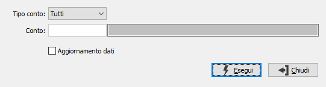

Ricalcolo progressivi clienti/fornitori
Il programma, viene utilizzato per effettuare un controllo ed un'eventuale aggiornamento, dei saldi progressivi dei clienti e dei fornitori.

TIPO CONTO: combo box per selezionare clienti, fornitori oppure entrambi.
CONTO: indicare il codice del conto, relativo al tipo inserito, per cui si intende effettuare l'elaborazione; confermando a vuoto l'elaborazione riguarderà tutti i codici del tipo inserito. Sul campo è attiva la ricerca F9.
AGGIORNAMENTO DATI: indica se deve essere effettuato l'aggiornamento dei valori ricalcolati (casella con segno di spunta), oppure se deve solo essere effettuato un controllo (casella vuota).